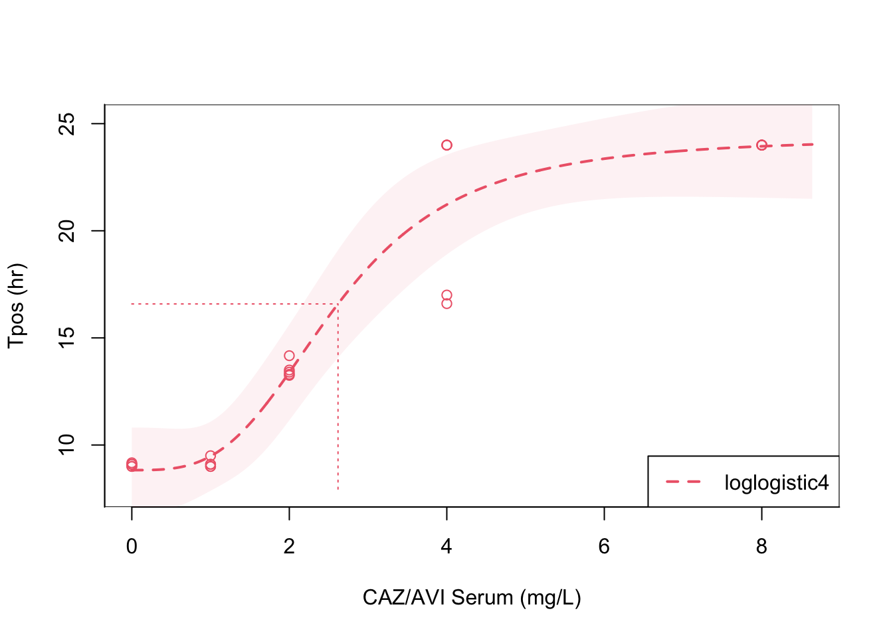

Workpackage 1A Quantitative Relationship of Tpos with Numbers of Viable Gram-Negative Bacteria
Methods
In this package we will establishing the quantitative relationship of Tpos and KPC- cabrapenemase producing Klebsiella pneumoniae inoculum in blood culture bottles. The methods for the assay are a modification of those originally proposed by Kaltsas et al.1 Detailed procedures can be found at this link. Methodology for preparing the test inoculum was adapted from CLSI M21A and M26A guidelines.2,3
Briefly, tubes containing 1.8 mL of pooled healthy human serum are inoculated with 0.2 mL of a series of ten-fold dilutions (5x101 to 5x107 CFU/mL) of the standardised inoculum of each test indicator strains.
The sera were are then transferred into BacT⁄ALERT bottles without antibiotic inactivating matrix (Biomérieux Inc) for aerobic incubation for 24 hours and monitored for time to positivity.
Tpos results were used to establish preliminary assay quality control ranges by testing in triplicate for five KPC-carbapenemase producing K. pneumoniae strains (KPC_KPCA,B,C and NDM, and VIM producing strains) and a reference K. pneumoniae ATCC strain producing ESBL enzyme only. More detailed information on the isolates can be found on the Protocols section.
We also compared how Tpos results change if the organism suspension prepared in phosphate buffered saline (PBS-0.9%) versus pooled human serum (serum).
Results
The relationship between Tpos and the K. pneumoniae inoculum is shown in Figure 1, a linear relationship was observed from approximately 101-108K. pneumoniae CFU/mL and a Tpos measured from 10.5 hours-4.5 hours over the tested inoculum range, with R2 of 0.92-0.94. The linear relationship of Tpos versus inoculum was consistent if the inoculum was prepared in PBS or pooled human serum as shown in Table 1.
Note
In the original methodology proposed by Kaltsas et al,1 the isolate inoculum was reported as the inoculum introduced into the bottle, which already contains between 30-40 mL of growth media (depending on the manufacturer).
Therefore we have followed this precedent of reporting the inoculum introduced into each bottle. This does not represent the final test inoculum that need to account for the total 42 mL volume in each bloodculture bottle.
All experiments were performed using bloodculture bottles without antibiotic inactivating matrix
Code
library (ggplot2)library(scales)theme_set(theme_bw())## import raw data from .csv filewp1 <-read.csv("~/Desktop/ACUTEWEBSITE/wp1a.csv")## plot raw data as x-y graph Tpos graph vs. drug concentrations stratified by dilution matrix, method="lm" is the method for linear regressionfig1 <-ggplot(wp1, aes(x=inoculum, y=tpos, color=isolates, shape=diluent, fill=isolates)) +geom_point(size=4, alpha =0.5) +scale_y_continuous(name="Tpos (hr)", limits=c(4,12)) +theme(legend.text=element_text(size=12)) +geom_smooth(aes(linetype=diluent), method=lm , color="black", fill="#69b3a2", se=TRUE, inherit.aes =TRUE )fig1 +theme_bw(base_size =14)+scale_x_log10(name="Inoculum CFU/mL", breaks =trans_breaks("log10",n=7, function(x) 10^x),labels =trans_format("log10", math_format(10^.x)))
Figure 1: Relationship of time-to-positivity (Tpos) versus test inoculum
These data confirm that Tpos exhibits a wide dynamic range as a surrogate indicator for viable CFU/mL.
Workpackage 1B: Effect of ceftazidime/avibactam exposure on Tpos
This workpackage explores how ceftazidime/avibactam concentrations, alone or in combination with other antibiotics alters Tpos for a standard bacterial inoculum of 1x10 CFU/mL of Klebsiella pneumoniae.
Methods
The effect of increasing fixed ceftazidime/avibactam (CAZ/AVI) concentrations (4:1) on Tpos was investigated at an inoculum of 1x104 CFU/mL of K. pneumoniae KPC_B (MIC 1 mg/L) and K. pneumoniae NDM producing isolate (negative control, MIC > 64 mg/L ). All experiments were performed in > 5 replicates with an incubation period of 24 hours.
Results
As shown in ?@fig-cazavitpos, a marked increased in the Tpos for KPC_B from < 10 hrs to > 24 hrs when CAZ/AVI concentrations surpassed 1 mg/L. In contrast, the negative control KPC_NDM strain exhibited consistent Tpos < 10hr at all test concentrations with lack of antimicrobial activity. Trends in Tpos relative to antibiotic exposure were fitted by Loess.
Note
Drug concentrations reported in figures represent the concentration of antibiotic injected (1 mL) into the bottle- “simulating” the antibiotic concentrations that would be detected in the bloodstream. These concentrations do not account for 40 mL growth median and inoculum (1 mL) already present in the bottle= total volume 42 mL.
Effect of ceftazidime/aviactam concentrations on Tpos of K. pneumoniae
The relationship between ceftazidime/avibactam concentrations and Tpos were analyzed by testing increasing concentrations of ceftazidime (0-8 mg/L) and avibactam (fixed ratio 4:1) using the commercial Avycaz (Zavicefta) formulation in at least 5 replicate experiments performed on separate days.
Bottles were incubated with 1x104Klebsiella pneumoniae KPC-B strain and incubated at 37°C for 24 hours. Tpos positivity was registered using the BACTEC Alert/3D software
Tpos data versus ceftazidime/avibactam concentrations were then fit to a 4-parameter logistic regression model using the Dose-Response Data Analysis (DRDA) package to estimate PD endpoints.4 Regression results were extracted using the Broom5 and Kableextra6 packages.
Results of the pharmacodynamic analysis are shown in ?@fig-cazavidrkpcb_com. Ceftazidime/avibactam exhibited a steep Tpos response from and EC50 of 2.10 (95% CI 2.08-2.12) to and EC90 2.39 (2.33-2.45). As shown in ?@tbl-cazavidrkpcb_comtbl, the transitional portion of the dose-response curve occurred 1-dilution above the MIC (1 mg/L) that was determined by Etest.
Note
Experiments shown in ?@fig-cazavidrkpcb_com were performed using commercial CAZ/AVI formulation not analytical powder. Concentrations plotted on the X axis indicate concentrations of ceftazidime (4:1 relative to avibactam) in tubes
Code
## a four-parameter logistic regression model is fit to ceftazidime concentrations to estimated PD parameterslibrary (readxl)library(drda)caz_avi_4 <-read_excel("datasets/kpcb_caz_avi_com.xlsx")fit1 <-drda(tpos ~ ctz, data=caz_avi_4, mean_function ="loglogistic4", max_iter =1000)plot(fit1, xlab ="CAZ/AVI Serum (mg/L)", ylab ="Tpos (hr)")
Pharmacodynamic relationship of Tpos to ceftazidime/avibactam concentrations
Code
## Analysis is repeated to produce a table reporting estimated EC10-EC95 parameter estimates plus 95% CI library (readxl)library(drda)library(broom)library(kableExtra)caz_avi_4 <-read_excel("datasets/kpcb_caz_avi_com.xlsx")fit1 <-drda(tpos ~ ctz, data=caz_avi_4, mean_function ="loglogistic4", max_iter =1000)ed<-effective_dose(fit1, y =c(0.10,0.25,0.50,0.75,0.90,0.95))kbl(ed)%>%kable_paper("hover", full_width = F, position ="left")
Pharmacodynamic estimates
Estimate
Lower .95
Upper .95
0.1
1.846039
1.801914
1.890164
0.25
1.970333
1.942340
1.998327
0.5
2.102997
2.081653
2.124341
0.75
2.244593
2.208455
2.280730
0.9
2.395722
2.334370
2.457074
0.95
2.504285
2.416703
2.591867
The relationship between ceftazidime/avibactam concentrations and Tpos were repeated by testing increasing concentrations of ceftazidime (0-8 mg/L) and avibactam (fixed ratio 4:1) using the analytical grade powder instead of the commercial pharmaceutical formulation. Experiments were performed in at least 5 replicate experiments on separate days.
Bottles were incubated with 1x104Klebsiella pneumoniae KPC-B strain and incubated at 37°C for 24 hours. Tpos positivity was registered using the BACTEC Alert/3D software
Tpos data versus ceftazidime/avibactam concentrations were then fit to a 4-parameter logistic regression model using the Dose-Response Data Analysis (DRDA) package to estimate PD endpoints.4 Regression results were extracted using the Broom5 and Kableextra6 packages.
As shown in ?@fig-cazavidrkpcb_pow, ceftazidime/avibactam exhibited a steep Tpos response with increasing concentrations with an EC50 of 2.10 (95% CI 2.08-2.12) to and EC90 2.39 (2.33-2.45). The transitional portion of the dose-response curve occurred 1-dilution above the MIC (1 mg/L) determined using Etest strips ?@tbl-cazavidrkpcb_powtbl
Note
Experiments shown in ?@fig-cazavidrkpcb_pow were performed using CAZ/AVI analytical grade powder at a fixed 4:1 ratio. Concentrations plotted on the X axis indicate concentrations of ceftazidime (4:1 relative to avibactam) in tubes
Code
## a four-parameter logistic regression model is fit to ceftazidime concentrations to estimated PD parameterslibrary (readxl)library(drda)caz_avi_4 <-read_excel("datasets/kpcb_caz_avi_powder_4-1.xlsx")fit1 <-drda(tpos ~ ctz, data=caz_avi_4, mean_function ="loglogistic4", max_iter =1000)plot(fit1, xlab ="CAZ/AVI Serum (mg/L)", ylab ="Tpos (hr)")

Pharmacodynamic relationship of Tpos to ceftazidime/avibactam concentrations
Code
## Analysis is repeated to produce a table reporting estimated EC10-EC95 parameter estiamtes plus 95% CI library (readxl)library(drda)library(broom)library(kableExtra)caz_avi_4 <-read_excel("datasets/kpcb_caz_avi_powder_4-1.xlsx")fit1 <-drda(tpos ~ ctz, data=caz_avi_4, mean_function ="loglogistic4", max_iter =1000)ed<-effective_dose(fit1, y =c(0.10,0.25,0.50,0.75,0.90,0.95))kbl(ed)%>%kable_paper("hover", full_width = F, position ="left")
Pharmacodynamic estimates
Estimate
Lower .95
Upper .95
0.1
1.333009
0.9970841
1.668934
0.25
1.868259
1.5935593
2.142960
0.5
2.618432
2.2872915
2.949573
0.75
3.669826
3.0481237
4.291528
0.9
5.143391
3.8260787
6.460704
0.95
6.470852
3.0385262
9.903177
Experiments with the commercial and analytical powder forms of ceftazidime/avibactam were repeated substituting Klebsiella pneumoniae KPC A isolate (ceftazidime/avibactam MIC 2 mg/L).
Results of the logistic regression analysis from studies with the commercial formulation demonstrated an EC50 4.14 mg/L (95% CI4.09-4.20) and an EC90 4.78 (95% CI 4.59-4.96) as shown in ?@fig-cazavidrkpca_com and ?@tbl-cazavidrkpca_comtbl. The transitional portion of the dose response curve occurred 1-dilution above the MIC of the isolate (2 mg/L) determined by Etest.
Note
Experiments plotted in ?@fig-cazavidrkpca_com were performed using the commercial CAZ/AVI formulation for K. pneumoniae KPC producing isolate A (MIC 2 mg/L)
Code
## a four-parameter logistic regression model is fit to ceftazidime concencentrations to estiamted PD parameterslibrary (readxl)library(drda)caz_avi_6 <-read_excel("datasets/kpca_caz_avi_com.xlsx")fit3 <-drda(tpos ~ ctz, data=caz_avi_6, mean_function ="loglogistic4", max_iter =1000)plot(fit3, xlab ="CAZ/AVI Serum (mg/L)", ylab ="Tpos (hr)")
Pharmacodynamic relationship of Tpos to ceftazidime/avibactam concentrations
Code
#| label: cazavidrkpca_comtbl#| fig-cap: "Pharmacodynamic estimates"## Analysis is repeated to produce a table reporting estimated EC10-EC95 parametersestiamtes plus 95% CI library (readxl)library(drda)library(broom)library(kableExtra)caz_avi_6 <-read_excel("datasets/kpca_caz_avi_com.xlsx")fit3 <-drda(tpos ~ ctz, data=caz_avi_6, mean_function ="loglogistic4", max_iter =1000)ed<-effective_dose(fit3, y =c(0.10,0.25,0.50,0.75,0.90,0.95))kbl(ed)%>%kable_paper("hover", full_width = F, position ="left")
Estimate
Lower .95
Upper .95
0.1
3.596272
3.478003
3.714541
0.25
3.861354
3.802319
3.920388
0.5
4.145974
4.098128
4.193821
0.75
4.451575
4.337013
4.566137
0.9
4.779700
4.595158
4.964243
0.95
5.016587
4.783567
5.249606
Similar experiments were performed using the same methodology and analytical grade powder of ceftazidime-avibactam formulation (4:1 ratio) against Klebsiella pneumoniae KPC A isolate (ceftazidime/avibactam MIC 2 mg/L).
Results of the logistic regression are shown in Figure 5 and demonstrated an EC50 4.55 mg/L (95% CI4.29-4.83) and an EC90 6.89 (95% CI 5.71-8.08). The transitional portion of the dose response curve was relatively broader and occurred 1-3 dilutions above the MIC of the isolate (2 mg/L) determined by Etest.
Figure 5. In vitro pharmacodynamics of CAZ/AVI concentrations vs. Tpos (KP KPC-A isolate MIC 2 mg/L)
Note
Experiments performed using pure powder at a CAZ:AVI ratio of 4:1
## Analysis is repeated to produce a table reporting estimated EC10-EC95 parametersestiamtes plus 95% CI library (readxl)library(drda)library(broom)library(kableExtra)caz_avi_5 <-read_excel("datasets/kpcb_caz_avi_powder_4-1.xlsx")fit2 <-drda(tpos ~ ctz, data=caz_avi_5, mean_function ="loglogistic4", max_iter =1000)ed<-effective_dose(fit2, y =c(0.10,0.25,0.50,0.75,0.90,0.95))kbl(ed)%>%kable_paper("hover", full_width = F, position ="left")
Estimate
Lower .95
Upper .95
0.1
1.333009
0.9970841
1.668934
0.25
1.868259
1.5935593
2.142960
0.5
2.618432
2.2872915
2.949573
0.75
3.669826
3.0481237
4.291528
0.9
5.143391
3.8260787
6.460704
0.95
6.470852
3.0385262
9.903177
We further explored how the results would change if a single fixed concentration of avibactam (4 mg/L) was used in all tubes. Experiments were repeated as described for Figure 3 using the same method and the analytical-grade powder of ceftazidime-avibactam formulation with at fixed avibactam concentrations against Klebsiella pneumoniae KPC B isolate (ceftazidime/avibactam MIC 1 mg/L).
Results of the logistic regression are shown in Figure 6 and demonstrated a lower EC50 4.14 mg/L (95% CI 4.09-4.19 ) and an EC90 4.77 (95% CI 4.59-4.96). The transitional portion of the dose response curve was relatively broader but occurred 1-3 dilutions near the MIC of the isolate (2 mg/L) determined by Etest.
Figure 6. In vitro pharmacodynamics of CAZ/AVI concentrations vs. Tpos (KP KPC-A isolate MIC 2 mg/L)
Note
Experiments performed using pure powder with a fixed avibactam concentration of 4 mg/L in all ceftazidime containing bottles.
Code
## a four-parameter logistic regression model is fit to ceftazidime concencentrations to estiamted PD parameterslibrary (readxl)library(drda)caz_avi_7 <-read_excel("datasets/kpca_caz_avi_powder_4-1.xlsx")fit4 <-drda(tpos ~ ctz, data=caz_avi_7, mean_function ="loglogistic4", max_iter =1000)plot(fit4, xlab ="CAZ/AVI Serum (mg/L)", ylab ="Tpos (hr)")
Code
## Analysis is repeated to produce a table reporting estimated EC10-EC95 parametersestiamtes plus 95% CI library (readxl)library(drda)library(broom)library(kableExtra)caz_avi_7 <-read_excel("datasets/kpca_caz_avi_powder_4-1.xlsx")fit4 <-drda(tpos ~ ctz, data=caz_avi_7, mean_function ="loglogistic4", max_iter =1000)ed<-effective_dose(fit4, y =c(0.10,0.25,0.50,0.75,0.90,0.95))kbl(ed)%>%kable_paper("hover", full_width = F, position ="left")
Estimate
Lower .95
Upper .95
0.1
3.012625
2.609006
3.416244
0.25
3.705997
3.436320
3.975674
0.5
4.558953
4.288497
4.829408
0.75
5.608220
5.095029
6.121412
0.9
6.898983
5.714913
8.083052
0.95
7.942748
4.904691
10.980806
We also explored how the results would change if a single fixed concentration of avibactam (4 mg/L) was used in all tubes. Experiments were repeated as previously described and the analytical powder of ceftazidime-avibactam formulation with at fixed avibactam concentrations against Klebsiella pneumoniae KPC B isolate (ceftazidime/avibactam MIC 1 mg/L).
Results of the logistic regression are shown in Figure 6 and demonstrated a lower EC50 1.28 mg/L (95% CI 1.18-1.38) and an EC90 2.66 (95% CI 1.87-3.44). The transitional portion of the dose response curve was relatively broader but occurred 1-3 dilutions near the MIC of the isolate (1 mg/L) determined by Etest.
Figure 7. In vitro pharmacodynamics of CAZ/AVI concentrations vs. Tpos (KP KPC-B isolate MIC 2 mg/L)
Note
Experiments were repeated using pure powder but with a fixed concentration of avibactam at 4 mg/L in all tubes
Code
## a four-parameter logistic regression model is fit to ceftazidime concentrations to estimated PD parameterslibrary (readxl)library(drda)caz_avi_8 <-read_excel("datasets/kpcb_caz_avi_powder_fix4.xlsx")fit5<-drda(tpos ~ ctz, data=caz_avi_8, mean_function ="loglogistic4", max_iter =1000)plot(fit5, xlab ="CAZ/AVI Serum (mg/L)", ylab ="Tpos (hr)")
Code
## Analysis is repeated to produce a table reporting estimated EC10-EC95 parametersestiamtes plus 95% CI library (readxl)library(drda)library(broom)library(kableExtra)caz_avi_8 <-read_excel("datasets/kpcb_caz_avi_powder_fix4.xlsx")fit5 <-drda(tpos ~ ctz, data=caz_avi_8, mean_function ="loglogistic4", max_iter =1000)ed<-effective_dose(fit5, y =c(0.10,0.25,0.50,0.75,0.90,0.95))kbl(ed)%>%kable_paper("hover", full_width = F, position ="left")
Estimate
Lower .95
Upper .95
0.1
0.5304440
0.3759849
0.6849032
0.25
0.6782345
0.5560370
0.8004320
0.5
0.8672018
0.7848848
0.9495189
0.75
1.1088186
0.9756342
1.2420030
0.9
1.4177537
1.0693014
1.7662060
0.95
1.6757127
0.8829137
2.4685116
These data confirm that Tpos recapitulates classical PD endpoints and the relationship of ceftazidime/avibactam concentrations versus Tpos follows classical sigmoidal dose response relationship with a steep transitional portion of the dose response curve that occurs near the MIC of the pathogen. Although ED50/90 estimates were broadly similar if the commercial (patient) and analytical powder formulations were tested, used of high-fixed concentrations of avibactam resulted in lower EC50/90 estimates and broader concentration-effect curves.
Figure 8. In vitro pharmacodynamics of meropenem concentrations vs. Tpos (KP ATCC isolate MIC XX mg/L)
Note
Experiments performed using pure powder with a fixed avibactam concentration of 4 mg/L in all ceftazidime containing bottles.
Code
## a four-parameter logistic regression model is fit to ceftazidime concentrations to estimated PD parameterslibrary (readxl)library(drda)mero1 <-read_excel("datasets/ATCC_meropenem.xlsx")fit6 <-drda(tpos ~ mero, data=mero1, mean_function ="loglogistic4", max_iter =1000)plot(fit4, xlab ="CAZ/AVI Serum (mg/L)", ylab ="Tpos (hr)")
Code
## Analysis is repeated to produce a table reporting estimated EC10-EC95 parameter estimates plus 95% CI library (readxl)library(drda)library(broom)library(kableExtra)mero1 <-read_excel("datasets/ATCC_meropenem.xlsx")fit6 <-drda(tpos ~ mero, data=mero1, mean_function ="loglogistic4", max_iter =1000)ed<-effective_dose(fit6, y =c(0.10,0.25,0.50,0.75,0.90,0.95))kbl(ed)%>%kable_paper("hover", full_width = F, position ="left")
Estimate
Lower .95
Upper .95
0.1
0.0291987
0.0257352
0.0326622
0.25
0.0366023
0.0338805
0.0393240
0.5
0.0458831
0.0442329
0.0475333
0.75
0.0575172
0.0545681
0.0604663
0.9
0.0721012
0.0648127
0.0793897
0.95
0.0840805
0.0717189
0.0964421
Package 1B: Effect of combination antimicrobial exposure on Tpos
Methods
The activity of combination ceftazidime/avibactam (4 to 1 ratio from commercial formulation) plus gentamicin (0-4 mg/L) was tested against Klebsiella pneumonia_KPC_B strain in 5 replicate experiments.
The effect of the antibiotic combinations Tpos combination was analyzed using a Bliss Independence Model of drug interaction using a workflow described for the synergy analysis using the BIGL package.7
The first step of the fitting procedure will consist in treating marginal data only, i.e. those observations within the experiment where one of the compounds is dosed at zero. For each compound the corresponding marginal doses are modelled using a 4-parameter logistic model
The marginal models will be estimated together using non-linear least squares estimation procedure. A simple sum-of-squared-residuals minimization driven by a default Nelder-Mead algorithm from optim minimizer was used.
Presence of synergistic or antagonistic effects was formalized by means of the meanR and maxR test. meanR test evaluates how the predicted response surface based on a specified null model differs from the observed one. If the null hypothesis is rejected, this test suggests that at least some dose combinations may exhibit synergistic or antagonistic behaviour. The meanR test is not designed to pinpoint which combinations produce these effects nor what type of deviating effect is present.
maxR test allows to evaluate presence of synergistic/antagonistic effects for each dose combination and as such provides a point-by-point classification.
Results
The results sown in Figure 8 demonstrated that CTZ/AVI + gentamicin is broadly synergistic over the range of tested concentrations, with and average 4.29 hr increase (95% CI 2.65-6.46) in Tpos versus the predicted null interactive response of ceftazidime-avibactam and gentamicin alone.
Figure 9. In vitro effects of combination ceftazidime/avibactam + gentamicin
## Plotting marginal model for ceftazidime and gentamicin, minimum constrained at 9 hrs and maximum contrastined at 24 hoursplot(marginalFit) +ggtitle(paste("Ceftazidime/Avibactam + Gentamicin"))
Null model: Bliss independence with shared maximal response
Variance assumption used: "equal"
Formula: effect ~ fn(h1, h2, b = 9, m1 = 24, m2 = 24, e1, e2, d1, d2)
Transformations: No
CTZ/AVI GENT
Slope 2.948 6.675
Maximal response 24.000 24.000
log10(EC50) 0.485 -0.246
Common baseline at: 9
No test statistics were computed.
CONFIDENCE INTERVALS
Overall effect
Estimated mean departure from null response surface with 95% confidence interval:
4.0374 [1.1143, 7.5135]
Evidence for effects in data: Syn
Significant pointwise effects
estimate lower upper call
0.5_0.5 5.5789 1.1548 10.0031 Syn
1_0.5 9.1981 6.2674 12.1288 Syn
2_0.25 11.1988 7.7384 14.6592 Syn
2_0.5 8.1567 4.3602 11.9531 Syn
Pointwise 95% confidence intervals summary:
Syn Ant Total
4 0 12
Code
plot(rs, legend =FALSE, main ="")view3d(0, -75)rglwidget()
Code
## mean R statistic evaluates how the test evaluates how the predicted response surface based on a specified null model differs from the observed one. If the null hypothesis is rejected, this test suggests that at least some dose combinations may exhibit synergistic or antagonistic behaviour. The meanR test is not designed to pinpoint which combinations produce these effects nor what type of deviating effect is present.meanR_N <-fitSurface(caz_gent_kpcb, marginalFit, statistic="meanR",CP=rs$CP, B.B=20, parallel =FALSE)# maxR test allows to evaluate presence of synergistic/antagonistic effects for each dose combination and as such provides a point-by-point classification.maxR_N <-fitSurface(caz_gent_kpcb, marginalFit,statistic ="maxR", CP = rs$CP, B.B =20,parallel =FALSE)maxR_B <-fitSurface(caz_gent_kpcb, marginalFit,statistic ="maxR", CP = rs$CP, B.B =20,parallel =FALSE)maxR_both <-rbind(summary(maxR_N$maxR)$totals,summary(maxR_B$maxR)$totals)contour(maxR_B,## colorPalette = c("blue", "black", "black", "red"),main =paste0(" Ceftazidime/Avibactam + Gentamicin"),scientific =TRUE, digits =3, cutoff = cutoff)
Null model: Bliss independence with shared maximal response
Variance assumption used: "equal"
Formula: effect ~ fn(h1, h2, b = 9, m1 = 24, m2 = 24, e1, e2, d1, d2)
Transformations: No
CTZ/AVI GENT
Slope 2.948 6.675
Maximal response 24.000 24.000
log10(EC50) 0.485 -0.246
Common baseline at: 9
Exact meanR test (H0 = no synergy/antagonism):
F(12,27) = 21.5311 (p-value = 0)
Evidence for effects in data: Syn
Points with significant deviations from the null:
d1 d2 absR p-value call
1_0.5 1 0.50 9.916196 <2e-16 Syn
2_0.25 2 0.25 10.848414 <2e-16 Syn
2_0.5 2 0.50 5.307784 9e-05 Syn
Overall maxR summary:
Call Syn Ant Total
Syn 3 0 12
CONFIDENCE INTERVALS
Overall effect
Estimated mean departure from null response surface with 95% confidence interval:
4.0374 [1.0765, 7.0119]
Evidence for effects in data: Syn
Significant pointwise effects
estimate lower upper call
0.5_0.5 5.5789 1.4003 9.7576 Syn
1_0.5 9.1981 6.2759 12.1203 Syn
2_0.25 11.1988 8.3840 14.0136 Syn
2_0.5 8.1567 4.8719 11.4414 Syn
Pointwise 95% confidence intervals summary:
Syn Ant Total
4 0 12
The activity of combination ceftazidime/avibactam (4 to 1 ratio from commercial formulation) plus aztreonam (0-40 mg/L) was tested against Klebsiella pneumonia_KPC_A strain in 5 replicate experiments using the same methodology.
Results are shown in Figure 9.
Figure 10. In vitro effects of combination ceftazidime/avibactam + gentamicin
## Plotting marginal model for ceftazidime and gentamicin, minimum constrained at 9 hrs and maximum contrastined at 24 hoursplot(marginalFit2) +ggtitle(paste("Ceftazidime/Avibactam + Gentamicin"))
Null model: Bliss independence with shared maximal response
Variance assumption used: "equal"
Formula: effect ~ fn(h1, h2, b = 9, m1 = 24, m2 = 24, e1, e2, d1, d2)
Transformations: No
CTZ/AVI GENT
Slope 2.948 6.675
Maximal response 24.000 24.000
log10(EC50) 0.485 -0.246
Common baseline at: 9
No test statistics were computed.
CONFIDENCE INTERVALS
Overall effect
Estimated mean departure from null response surface with 95% confidence interval:
-4.1232 [-6.1317, -2.5831]
Evidence for effects in data: Ant
Significant pointwise effects
estimate lower upper call
1_1 -13.6766 -17.3080 -10.0453 Ant
2_1 -10.1735 -11.8815 -8.4656 Ant
Pointwise 95% confidence intervals summary:
Syn Ant Total
0 2 6
Code
plot(rs2, legend =FALSE, main ="")view3d(0, -75)rglwidget()
Code
## mean R statistic evaluates how the test evaluates how the predicted response surface based on a specified null model differs from the observed one. If the null hypothesis is rejected, this test suggests that at least some dose combinations may exhibit synergistic or antagonistic behaviour. The meanR test is not designed to pinpoint which combinations produce these effects nor what type of deviating effect is present.meanR_N2 <-fitSurface(caz_gent_kpca, marginalFit2, statistic="meanR",CP=rs2$CP, B.B=20, parallel =FALSE)# maxR test allows to evaluate presence of synergistic/antagonistic effects for each dose combination and as such provides a point-by-point classification.maxR_N2 <-fitSurface(caz_gent_kpca, marginalFit2,statistic ="maxR", CP = rs2$CP, B.B =20,parallel =FALSE)maxR_B2 <-fitSurface(caz_gent_kpca, marginalFit2,statistic ="maxR", CP = rs2$CP, B.B =20,parallel =FALSE)maxR_both2 <-rbind(summary(maxR_N2$maxR)$totals,summary(maxR_B2$maxR)$totals)contour(maxR_B2,## colorPalette = c("blue", "black", "black", "red"),main =paste0(" Ceftazidime/Avibactam + Gentamicin"),scientific =TRUE, digits =3, cutoff = cutoff)
Null model: Bliss independence with shared maximal response
Variance assumption used: "equal"
Formula: effect ~ fn(h1, h2, b = 9, m1 = 24, m2 = 24, e1, e2, d1, d2)
Transformations: No
CTZ/AVI GENT
Slope 2.948 6.675
Maximal response 24.000 24.000
log10(EC50) 0.485 -0.246
Common baseline at: 9
Exact meanR test (H0 = no synergy/antagonism):
F(6,27) = 27.5033 (p-value = 0)
Evidence for effects in data: Ant
Points with significant deviations from the null:
d1 d2 absR p-value call
1_1 1 1 6.845024 <2e-16 Ant
2_1 2 1 10.847476 <2e-16 Ant
Overall maxR summary:
Call Syn Ant Total
Ant 0 2 6
CONFIDENCE INTERVALS
Overall effect
Estimated mean departure from null response surface with 95% confidence interval:
-4.1232 [-5.3939, -1.2063]
Evidence for effects in data: Ant
Significant pointwise effects
estimate lower upper call
1_1 -13.6766 -18.3106 -9.0427 Ant
2_1 -10.1735 -12.3695 -7.9776 Ant
Pointwise 95% confidence intervals summary:
Syn Ant Total
0 2 6
Ceftazidime-avibactam + aztreonam synergy against K. pneumoniae NDM-1 strain.
The activity of combination ceftazidime/avibactam (4 to 1 ratio from commercial formulation) plus aztreonam (0-40 mg/L) was tested against Klebsiella pneumonia_KPC_B strain in 3 replicate experiments.
The effect of the Tpos combination was analyzed using a Bliss Independence Model of drug interaction using a workflow described for the synergy analysis using the BIGL package.7
The results sown in Figure 8 demonstrated that CTZ/AVI + aztreonam is broadly synergistic over the range of tested concentrations, with and average 3.6 hr increase (95% CI 1.76-6.23) in Tpos versus the predicted null interactive response of ceftazidime-avibactam and gentamicin alone.
Figure 11.
Figure 12. In vitro effects of combination ceftazidime/avibactam + aztreonam against NDM-1 producing isolate.
The activity of combination ceftazidime/avibactam (4 to 1 ratio from commercial product) plus aztreonam (1.25-40 mg/L) was tested against and NDM-2 producing Klebsiella pneumoniae isolate (ceftazidime/avibactam MIC > 64 mg/L).
The effect of the Tpos combination was analyzed using a Bliss Independence Model of Drug interaction.
The results demonstrated that CTZ/AVI + aztreonam is broadly synergistic over a range of clinically achieved concentrations, with an average 8.54 hr (95% CI 8.46-8.60) increase in Tpos versus the predicted null response for each individual drug.
## Plotting marginal model for ceftazidime/avibactam and aztroenam, minimum constrained at 9 hrs and maximum constrained at 24 hoursplot(marginalFit2) +ggtitle(paste("Ceftazidime/Avibactam + Aztreonam"))